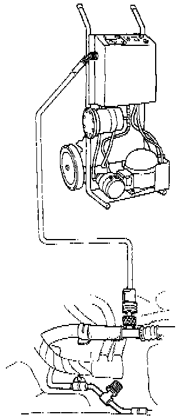

Refrigerant Recovery

WARNING:
- Keep away from open flames. The refrigerant, although nonflammable, will produce a poisonous gas it burned.
- Work in a well-ventilated area. Refrigerant evaporates quickly, and can force all the air Out of a small enclosed area.
1. Connect the Refrigerant Recovery System to the vehicle's A/C system.
2. Operate the Refrigerant Recovery System according to the manufacturer's instructions.